Pensione anticipata contributiva a 64 anni: requisiti e cautele
Andare in pensione prima dei 67 anni resta possibile, ma la strada anticipata contributiva a 64 anni impone tre requisiti distinti: età, anzianità di versamenti e un importo minimo…

Rateazione dei debiti contributivi INPS: come funziona la dilazione in fase amministrativa
La dilazione dei debiti contributivi è uno strumento chiave per imprese e lavoratori autonomi in difficoltà. Circolano annunci di un'estensione dei piani fino a 60 mesi, ma la font…

Deiezioni canine non raccolte: quando scatta il reato di imbrattamento
Lasciare a terra gli escrementi del proprio cane è quasi ovunque un illecito amministrativo punito dai regolamenti comunali. In casi specifici, però, la condotta può assumere rilie…

Assegno divorzile e unioni civili: gli orientamenti consolidati della Cassazione
La giurisprudenza di legittimità ha stabilizzato alcuni principi cardine del diritto di famiglia: l'assegno divorzile ha natura composita, il giudice dispone di poteri istruttori p…

Bancarotta fraudolenta da operazioni dolose: quando c'è il dolo secondo la Cassazione
La Corte di Cassazione torna sull'elemento soggettivo della bancarotta fraudolenta impropria da operazioni dolose. Non basta la carica ricoperta né l'analisi a posteriori del disse…

Riconoscimento facciale della polizia: quali garanzie per i cittadini
Il Governo ha approvato i decreti attuativi del regolamento UE sull'intelligenza artificiale, disciplinando l'uso del riconoscimento facciale da parte delle forze dell'ordine. La m…

Personale scolastico oltre i 70 anni: cosa cambia dopo la Consulta
La Corte Costituzionale è tornata sul tema del limite di età per il trattenimento in servizio del personale scolastico. La questione riguarda il rapporto tra un tetto anagrafico ri…

Divisione ereditaria disposta dal testatore: limiti e effetti
Chi redige un testamento può non limitarsi a indicare le quote, ma spartire concretamente i beni tra gli eredi. Il codice civile lo consente entro precisi limiti, con conseguenze m…
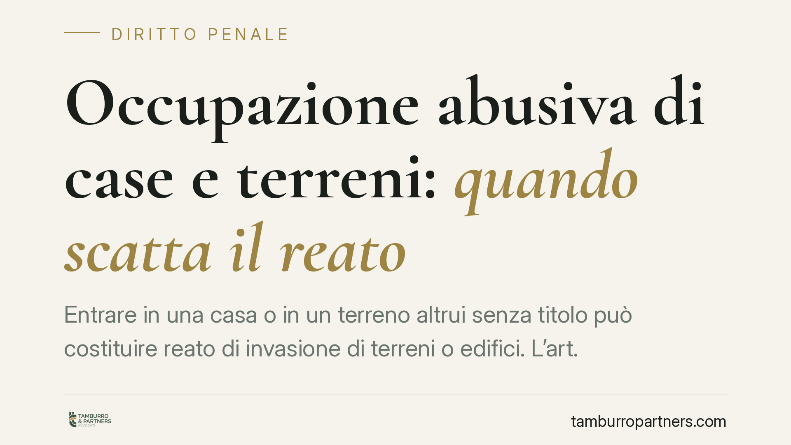
Occupazione abusiva di case e terreni: quando scatta il reato
Entrare in una casa o in un terreno altrui senza titolo può costituire reato di invasione di terreni o edifici. L'art. 633 del codice penale richiede però requisiti precisi: senza …
La rappresentazione ereditaria: chi subentra se l'erede muore o rinuncia
Quando l'erede designato muore prima del defunto o rinuncia all'eredità, la successione non si blocca. Un meccanismo previsto dal Codice civile, la rappresentazione, consente ai di…
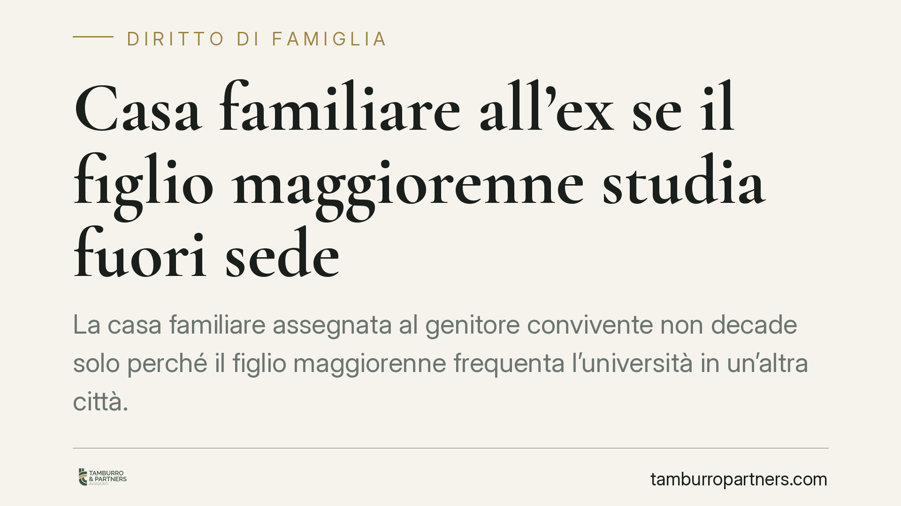
Casa familiare all'ex se il figlio maggiorenne studia fuori sede
La casa familiare assegnata al genitore convivente non decade solo perché il figlio maggiorenne frequenta l'università in un'altra città. Conta la persistenza del legame stabile co…
Rinuncia all'eredità e cartelle esattoriali: l'effetto retroattivo
Un testamento riemerge a distanza di tempo e cambia gli assetti successori. Secondo una recente pronuncia tributaria, in linea con la Cassazione, la rinuncia all'eredità può travol…
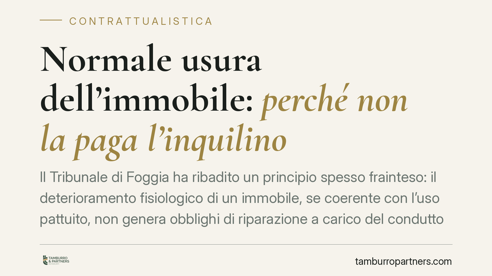
Normale usura dell'immobile: perché non la paga l'inquilino
Il Tribunale di Foggia ha ribadito un principio spesso frainteso: il deterioramento fisiologico di un immobile, se coerente con l'uso pattuito, non genera obblighi di riparazione a…
IVA inclusa o esclusa nel prezzo: cosa dice il diritto quando il contratto tace
Un contratto indica un prezzo ma tace sull'IVA. Alla scadenza il fornitore chiede il 22% in più; il cliente ritiene tutto già compreso. Non esiste una risposta unica: la soluzione …
Rinuncia all'eredità: i creditori dell'erede possono contestarla?
Un erede indebitato che rinuncia all'eredità sottrae di fatto ai propri creditori un patrimonio su cui rivalersi. Il Codice civile prevede un rimedio specifico: l'art. 524 c.c. con…
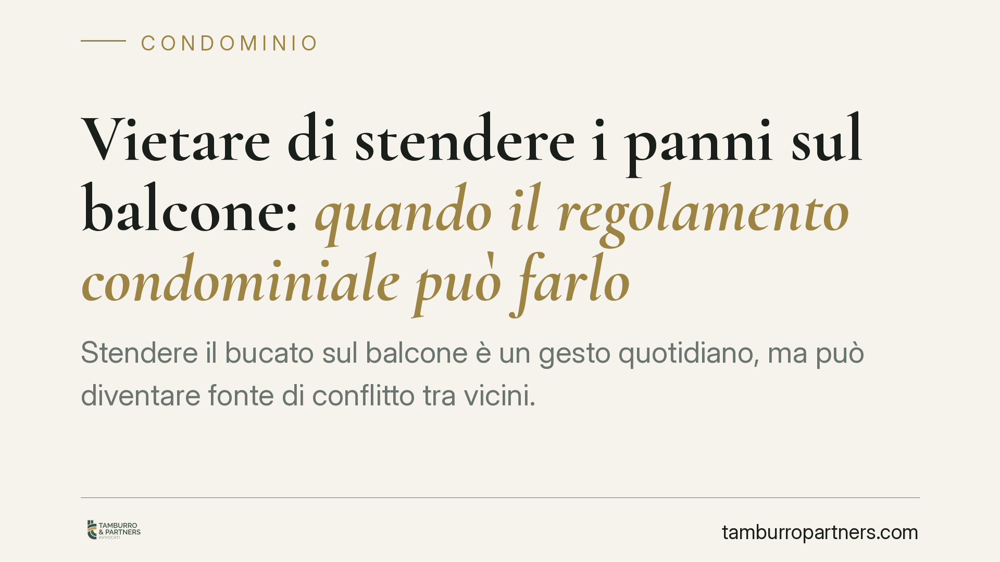
Vietare di stendere i panni sul balcone: quando il regolamento condominiale può farlo
Stendere il bucato sul balcone è un gesto quotidiano, ma può diventare fonte di conflitto tra vicini. Una recente pronuncia di merito ha riconosciuto la legittimità di divieti rego…
Freezing della vittima e violenza sessuale: l'immobilità non è consenso
Una vittima che, aggredita, resta immobile per paura non sta acconsentendo. Il fenomeno psicologico del freezing è una reazione involontaria, non una forma di adesione. Il tema tor…
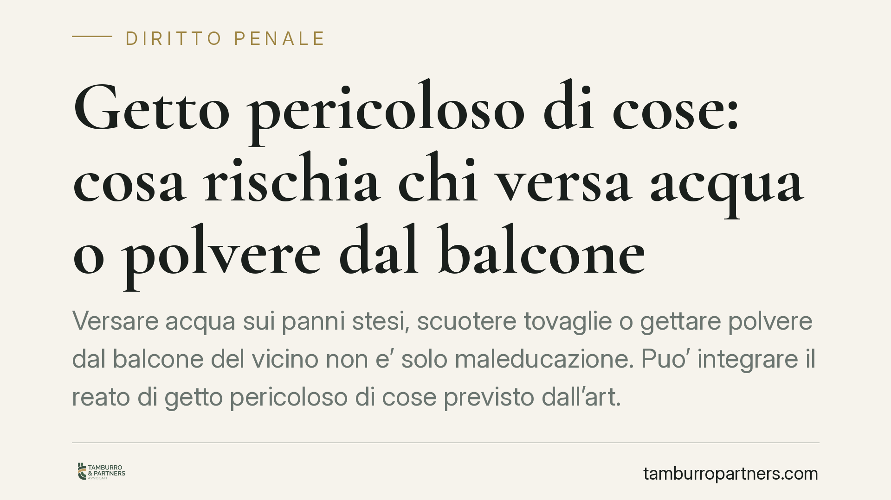
Getto pericoloso di cose: cosa rischia chi versa acqua o polvere dal balcone
Versare acqua sui panni stesi, scuotere tovaglie o gettare polvere dal balcone del vicino non e' solo maleducazione. Puo' integrare il reato di getto pericoloso di cose previsto da…
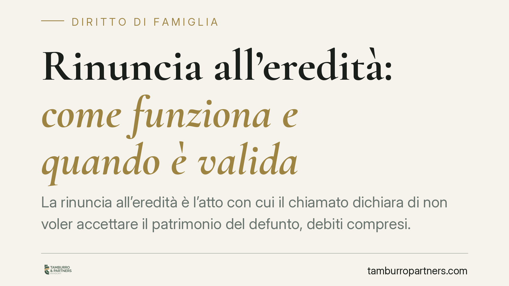
Rinuncia all'eredità: come funziona e quando è valida
La rinuncia all'eredità è l'atto con cui il chiamato dichiara di non voler accettare il patrimonio del defunto, debiti compresi. Ma non basta la volontà: servono forma solenne e re…
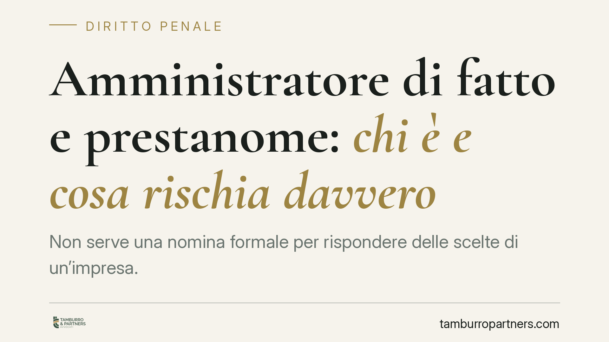
Amministratore di fatto e prestanome: chi è e cosa rischia davvero
Non serve una nomina formale per rispondere delle scelte di un'impresa. Chi gestisce concretamente una società, pur figurando estraneo, può essere chiamato a rispondere in sede pen…
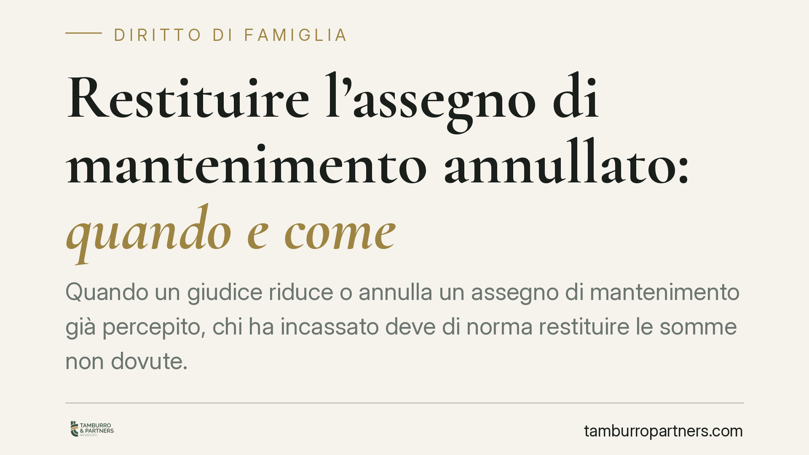
Restituire l'assegno di mantenimento annullato: quando e come
Quando un giudice riduce o annulla un assegno di mantenimento già percepito, chi ha incassato deve di norma restituire le somme non dovute. È l'applicazione del principio della rip…
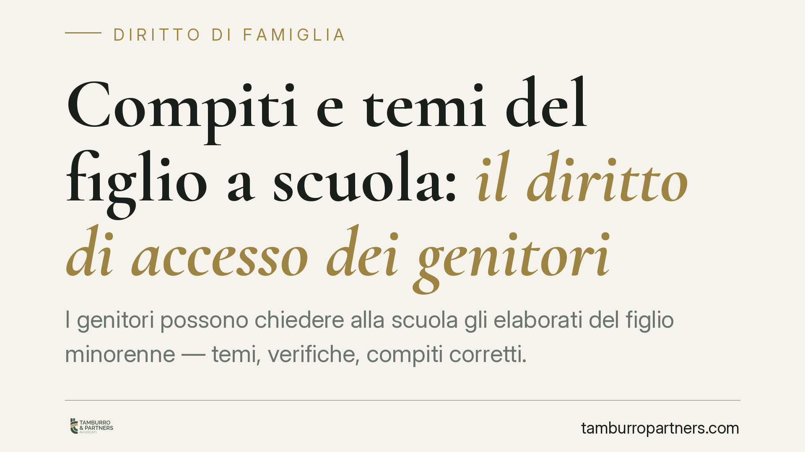
Compiti e temi del figlio a scuola: il diritto di accesso dei genitori
I genitori possono chiedere alla scuola gli elaborati del figlio minorenne — temi, verifiche, compiti corretti. La giustizia amministrativa lo ha riconosciuto, entro un limite prec…
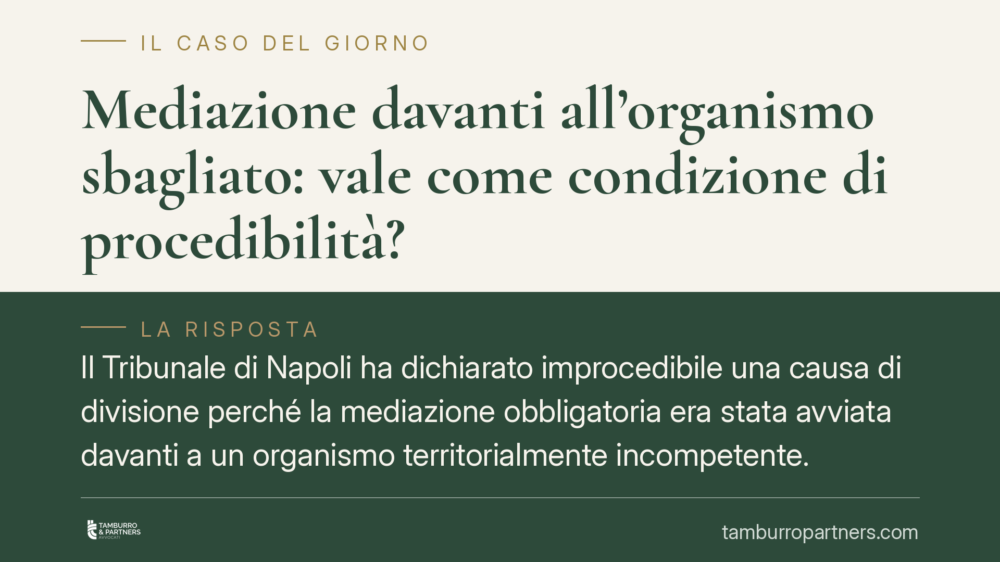
Mediazione davanti all'organismo sbagliato: vale come condizione di procedibilità?
Il Tribunale di Napoli ha dichiarato improcedibile una causa di divisione perché la mediazione obbligatoria era stata avviata davanti a un organismo territorialmente incompetente. …
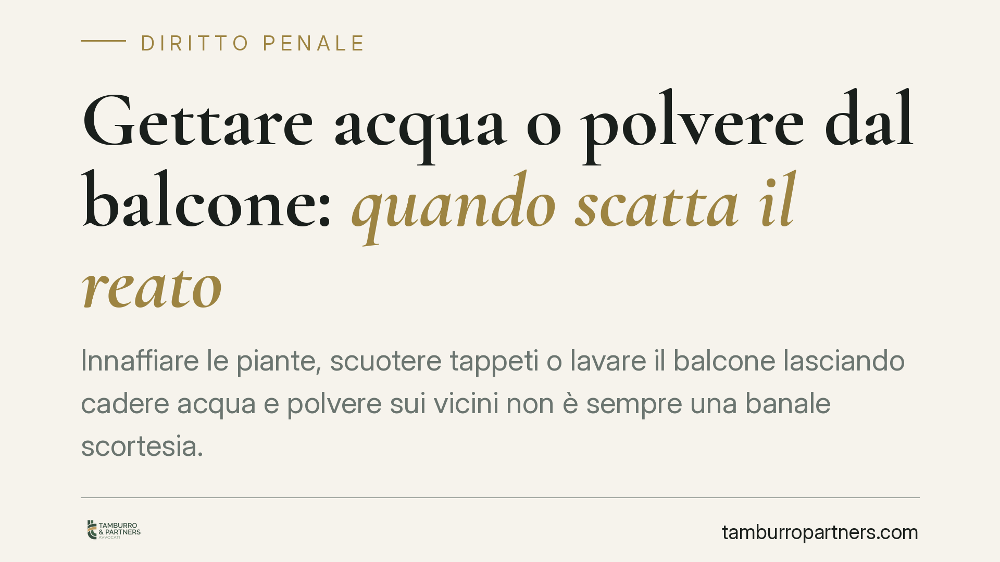
Gettare acqua o polvere dal balcone: quando scatta il reato
Innaffiare le piante, scuotere tappeti o lavare il balcone lasciando cadere acqua e polvere sui vicini non è sempre una banale scortesia. Quando la condotta molesta le persone, può…
Pensione ai figli inabili: la doppia prova richiesta ai superstiti
La reversibilità ai figli maggiorenni inabili spetta solo se, al momento della morte del genitore assicurato, coesistono due presupposti: l'inabilità al lavoro e la vivenza a caric…
Pergolato o tettoia? Quando scatta l'abuso edilizio penalmente rilevante
Coprire un pergolato con elementi fissi lo trasforma in tettoia. Cambia la qualificazione dell'opera e, con essa, il titolo edilizio necessario: dal semplice pergolato liberalizzat…
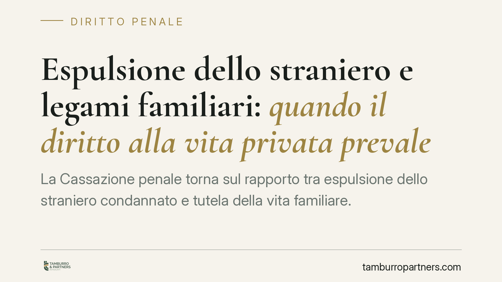
Espulsione dello straniero e legami familiari: quando il diritto alla vita privata prevale
La Cassazione penale torna sul rapporto tra espulsione dello straniero condannato e tutela della vita familiare. Anche in presenza di una condanna, l'allontanamento non è automatic…
Cartella INPS o INAIL: chi va citato in giudizio per l'opposizione
Chi riceve una cartella per contributi INPS o premi INAIL non contestati deve sapere una cosa: il soggetto da chiamare in giudizio non è l'agente della riscossione, ma l'ente credi…
Notifica a mano al figlio minorenne convivente: quando è valida
La Cassazione ribadisce che la notifica di un atto giudiziario è valida anche se ricevuta dal figlio minorenne convivente, purché abbia almeno quattordici anni. Non serve che l'att…
Sequestro dello smartphone senza mandato: limiti e garanzie
La polizia giudiziaria può sequestrare uno smartphone in via d'urgenza senza attendere il provvedimento del giudice. La Cassazione conferma la legittimità del sequestro, ma solo se…